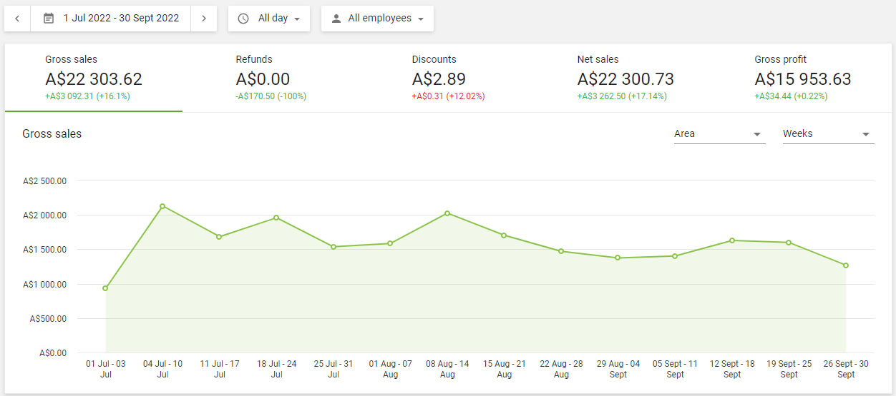
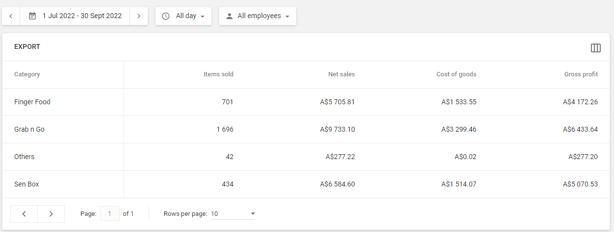
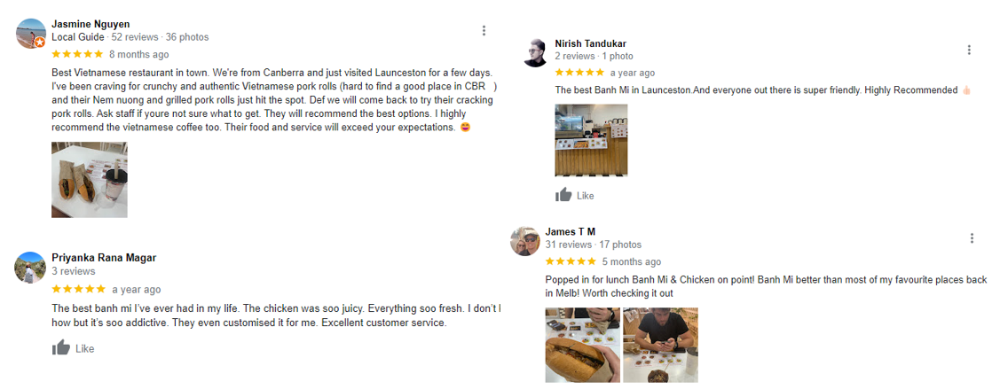
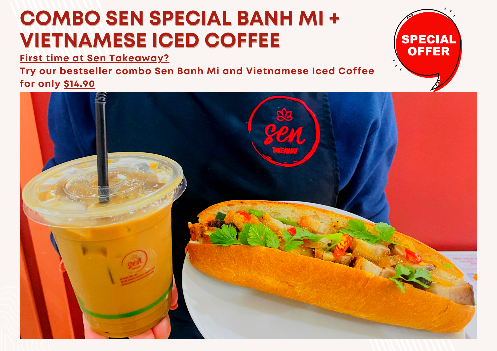
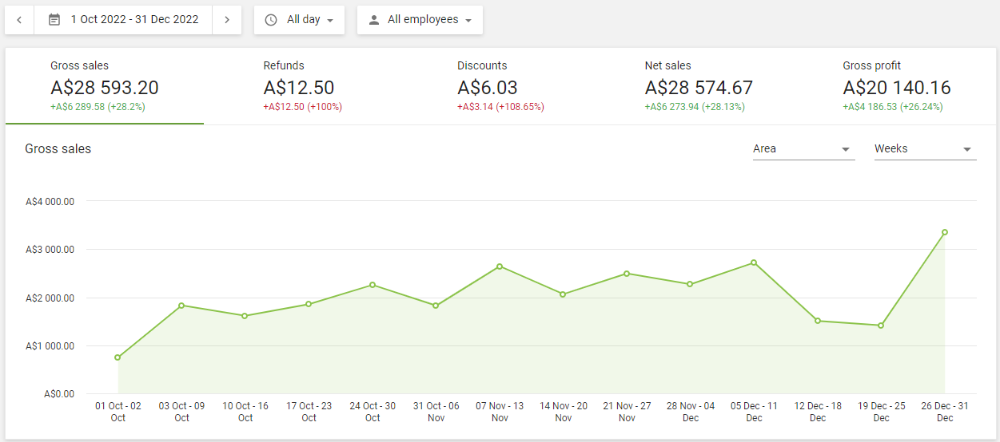

Data-driven business decisions based on operational data of Sen Takeaway business
Sen Takeaway was my first foray into the food and beverage business, which I launched in March 2023. Although the business has unfortunately closed since February 2024, the experience was instrumental in showcasing my ability to leverage operational data to drive strategic decision-making and achieve significant business growth.
During the operation of Sen Takeaway, I took on the responsibility of compiling, managing, and analyzing sales data to gain insights into customer preferences, menu performance, and pricing strategies. By diving deep into the data, I can identify and implement effective bundle deals and marketing strategies. By carefully studying our sales patterns, I was able to determine the best combination of items to create attractive bundle deals that appealed to customers. This strategic approach helped the business attract more customers to our store and increase sales.
The gross sales shown above represent Q1 2023-2024, which was the second quarter of our business operations. During this period, we purposely focused on selling a variety of items as standalone offering. This approach allowed us to test the market and determine which types of food would resonate with our customers. The sales in this quarter were modest at around $22,000 with gross profit less than $16,000.

Through a thorough analysis of food sales by category and gathering feedback from customers in-store, online, and through our delivery partners, I identified the Grab n Go product category is the best-selling category.
Through careful analysis of the sales data and customers feedback, I discovered that our Banh Mi, a Vietnamese sandwich, was consistently our best-selling item. This insight led to a strategic decision to focus our promotional and marketing efforts on this particular menu item. Building on this success, I then created a new bundle deal that combined the Banh Mi with a refreshing Vietnamese coffee, offering customers a complete and enticing meal experience.
In the Food and Beverage industry, it is well-known that restaurants generate higher profits from beverages rather than food. While the cost of goods sold (COGS) for food can be more than 30%, beverages like coffee typically have a COGS of less than 20%. This means that owners can retain almost 80% of the revenue generated from beverage sales, considering that beverage preparation requires less labour and is quicker compared to food items.
Taking advantage of this knowledge, we incorporated Sen's signature Vietnamese Iced Coffee into our menu alongside our bestselling Banh Mi in the Grab and Go food category. With the Banh Mi being prepared in less than 3 minutes and the Vietnamese Iced Coffee taking less than 20 seconds to make, it proved to be an excellent addition. This combination not only has lower COGS and higher profit margins but is also less labour-intensive. Most importantly, it offers a delightful and complementary taste experience when enjoyed together with the Banh Mi. This bundle deal also helped increase the average order value and encouraged customers to explore our menu further.
Recognizing the importance of marketing and advertising, I allocated a portion of the budget to promote our new bundle deal and drive awareness among our target audience. By leveraging various advertising channels, including online platforms and partnering with delivery services, we aimed to reach a wider customer base and generate increased footfall to our store. Additionally, we tracked the effectiveness of our advertising campaigns by analyzing key performance indicators directly linked to our sales data.
The implementation of the Banh Mi + Vietnamese Coffee bundle deal, supported by targeted advertising, had a significant impact on the business. In the subsequent quarter, we experienced a remarkable 28% increase in sales revenue and a 26% improvement in profit margin. Customers responded positively to the bundle deal, which not only increased the average order value but also enhanced their overall food experience.
The Sen Takeaway case exemplifies my ability to utilize data-driven insights to make strategic business decisions. By analyzing sales data and customer feedback, I identified a high-performing menu item and created a compelling bundle deal that resonated with our target audience. This, coupled with a well-executed advertising campaign, resulted in substantial business growth and increased profitability. The experience gained from running Sen Takeaway serves as a testament to my skills in leveraging operational data to drive business success, optimize menu offerings, and deliver exceptional customer experiences.